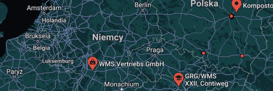

Web Map Service (WMS)
Stworzony przez Open Geospatial Consortium (OGC) standard udostępniania w Internecie danych geograficznych (map) w postaci rastrowej
Stworzony przez Open Geospatial Consortium (OGC) standard udostępniania w Internecie danych geograficznych (map) w postaci rastrowej
Standardowy protokół do obsługi wstępnie renderowanych lub obliczonych w czasie wykonywania kafelków map georeferencyjnych przez Internet. Specyfikacja została opracowana i po raz pierwszy opublikowana przez Open Geospatial Consortium w 2010 roku.
TMS Map Service to specyfikacja kafelkowych map internetowych opracowana przez Open Source Geospatial Foundation. Definicja zasadniczo wymaga struktury URI, która próbuje spełnić zasady REST.
Najlepsze puzle w Polsce, i nie tylko. Myślisz że znasz Polskę. 99% osób nie kończy tej gry. Bądz pierwszy! Zacznij już dziś